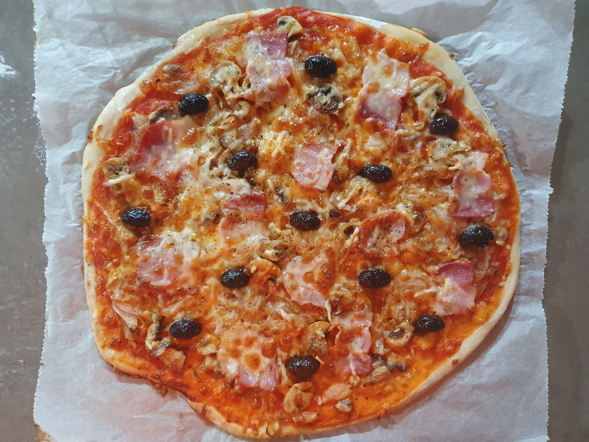
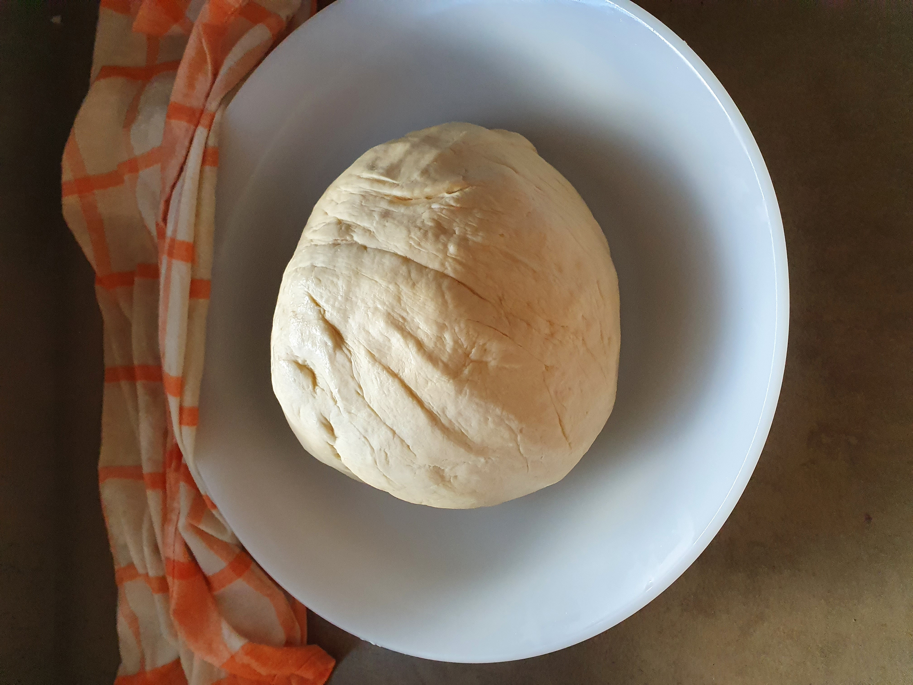
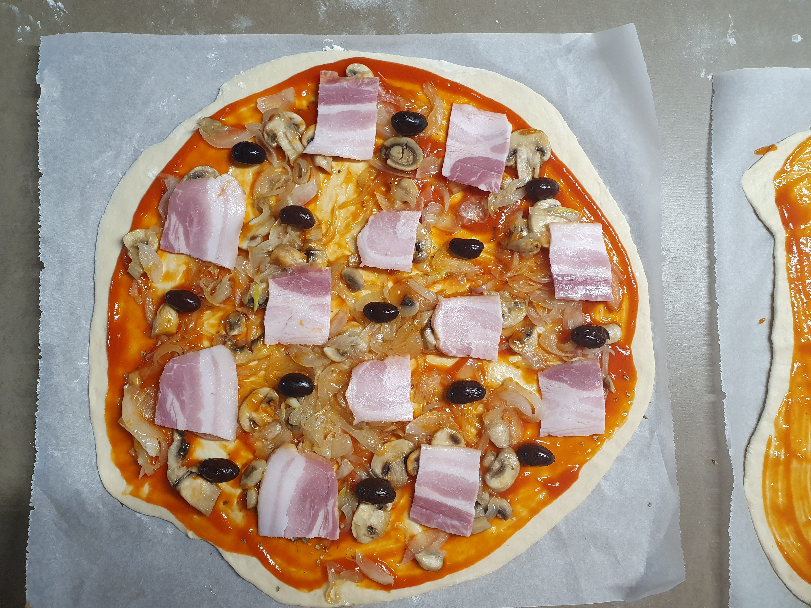
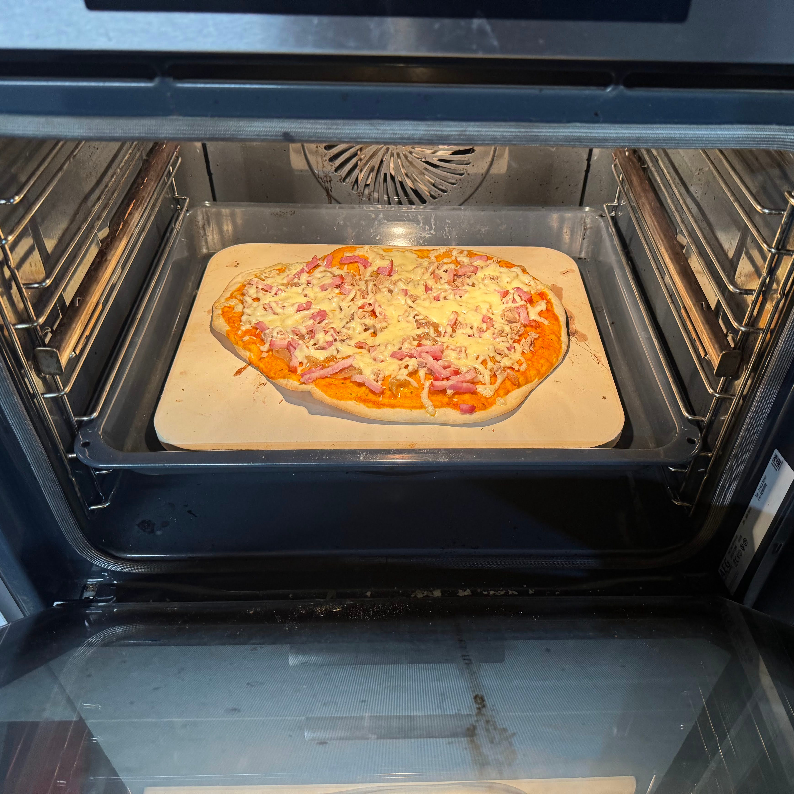

Recepta de Pizza Casolana

Ingredients
- Farina
- Aigua
- Oli
- Sal
- Formatge
Instruccions
La pizza és una massa plana amb salsa i formatge que admet infinites combinacions d’ingredients. La clau d’un bon resultat és una massa amb fermentació adequada i un forn ben calent.
La massa es prepara amb farina, aigua, llevat, sal i un punt d’oli. Després d’un primer pastat, es deixa reposar fins que dobli el volum, es boleja i es deixa relaxar abans d’estirar.
Amb la base preparada, s’hi afegeixen la salsa de tomàquet i el formatge. Es pot completar amb ingredients com pernil, xampinyons o olives. Enforna fins a daurar i fondre el formatge.
Galeria d'imatges
-

-

-
